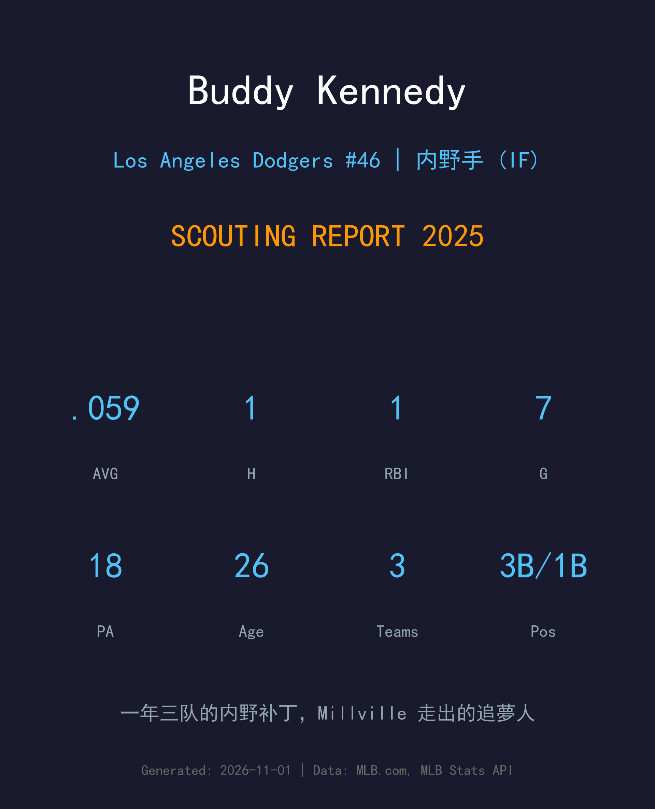
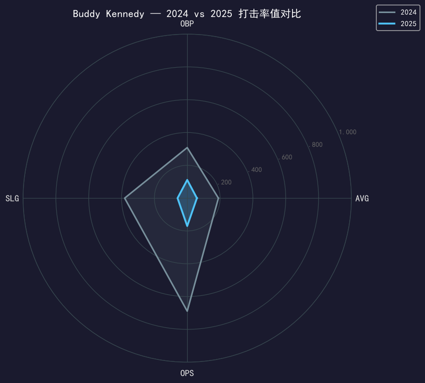
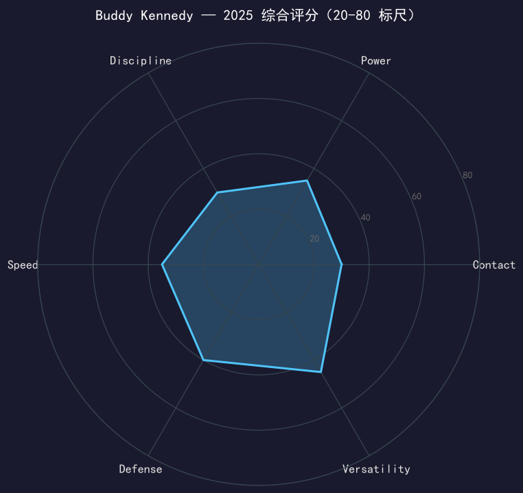

Los Angeles Dodgers #46 | 内野手 | 右打 | 一年三队的内野补丁，Millville 走出的追梦人

⚠️ 小样本警告：本报告基于 7 场 / 18 个打席的道奇段数据。
Buddy Kennedy 的 2025 年是 roster 高速公路上的连续追尾：费城人开季（4 场 8 PA、0 安打）→ 蓝鸟（2 场）→ 8 月 15 日被道奇自 waiver 认领 → 10 天后（8/25）被 DFA → 8/28 被 outright 到 3A。一年三队、三次名单状态变更，最终留在洛杉矶的履历是 7 场、18 个打席、1 支安打、1 分打点、.059 的打击率。
数字层面没有辩护的空间：18 PA 里 17 个打数只敲出 1 安（外加 1 次触身），三振 5 次、保送 0 次—— BABIP .083 固然有运气成分，但「打不到球」是这 7 场最诚实注脚。值得记录的是他的轨迹：在道奇的 7 场全部集中在 8 月中旬，承担的是三垒/一垒的应急补丁，完成任务后即被更优先的 roster 选项替换——标准的「深度选项」生命周期。
从 2025 年 11 月的视角看，27 岁的 Kennedy 是 3A 名单上最常见的名字类型：能守内野两个角落、偶尔客串外野、右打 platoon 选项。他的大联盟故事还没写完，但笔墨已经不多——下一次机会，大概率还是某支球队的 waiver 线。
2022 年 6 月 17 日在亚利桑那登上大联盟，首个赛季 30 场 .217/.287/.325、12 打点——新秀年的表现让球迷短暂记住了这个敦实的新泽西内野手。
老虎（6 场）与费城人（8 场）合计 14 场——那是他第一次体验「一年两队」，为 2025 年更疯狂的「一年三队」做了预演。
费城人 → 蓝鸟 → 道奇：单季三支球队、两次 waiver 操作。8 月 15 日道奇认领他的那天，他正在多伦多机场等一班永远取消的航班。

| 赛季 | 队 | G | PA | AVG | OBP | SLG | OPS | HR | RBI | BB | SO |
|---|---|---|---|---|---|---|---|---|---|---|---|
| 2022 | ARI | 30 | 94 | .217 | .287 | .325 | .612 | 1 | 12 | 8 | 23 |
| 2024 | DET+PHI | 14 | 26 | .190 | .308 | .381 | .689 | 1 | 6 | 4 | 7 |
| 2025 | PHI+TOR | 6 | 14 | .083 | .214 | .167 | .381 | 0 | 0 | 2 | 3 |
| 2025 | LAD | 7 | 18 | .059 | .111 | .059 | .170 | 0 | 1 | 0 | 5 |
四行数据是一条持续四年的下滑直线：OPS 从 .612（2022）→ .689（2024 小样本反弹）→ .381（2025 上半季）→ .170（道奇段）。需要公道地说，2025 全年合计 32 PA 的样本连「评估」都谈不上，只能算「目击」；但有一个信号值得警惕——保送从 2022 年的 8.5% 掉到 2025 年的 2/32（6.3% 里道奇段为 0），当一位本就不以力量见长的打者连选球都开始迷失，他的 MLB 地板正在松动。
Kennedy 的 2025 年是「40 人名单经济学」的完美教材：费城人需要他是因为春天名单有洞；蓝鸟捡他是因为 waiver 顺位刚好；道奇认领他是因为 8 月中内野出现伤病真空；10 天后 DFA 是因为 Muncy 复出、更优选项激活。每一步都不是对他个人的评价，而是 roster 缺口的函数。这类球员的价值不在数字，在「随时能上场守一个你不敢让主力去守的位置」——他今年做到了，仅此而已，也恰如其分。
他的家乡 Millville, NJ 以出产 Mike Trout 闻名——那里每个孩子打球的第一个偶像都是同一个人。Kennedy 的身体条件（5'10"、213 磅的矮壮型）与 Trout 完全不同，他的路也注定不同：不是天选之子的直梯，而是 waiver 线上的旋转门。2022 年首秀年他曾让 Millville 的第二个 MLB 梦想看起来触手可及；2025 年，这个梦想缩水为「再被认领一次」。
被 outright 到奥克拉荷马城之后，Kennedy 在 3A 打完了赛季尾声——那段没有聚光灯的日子里，他的角色从「大联盟补丁」变回「3A 老將」。对 27 岁的他来说，这不是降级宣判，而是常态：2026 年的电话只会在两种情况下响起——某队内野伤病潮，或者九月扩编。

waiver 线上的内野补丁，电话永远开机
C 级 / 3A 主力与 MLB 第 27 人
道奇 2025 季后赛夺冠之路：外卡 2-0 红人 → NLDS 3-1 费城人 → NLCS 4-0 酿酒人 → 世界大赛 4-3 多伦多蓝鸟。
Kennedy 与这条夺冠路无关——8 月 28 日之后，他就是奥克拉荷马城 3A 名单上的一个普通名字。冠军之夜的道奇更衣室 spray 香槟时，他可能正坐在 3A 更衣室的长凳上看转播。这并不悲伤：一年三队的球员懂一个道理——能出现在 MLB 的 7 场 boxscore 里，本身就是对 Millville 那个在沙地练习内野接地滚球的少年的回答。
Kennedy 的 2026 年将从春训的非名单邀请开始——他熟悉这个流程，就像熟悉机场贵宾室的咖啡机。两条路摆在面前：在 3A 打出 .280/.360 的「老将反弹年」，重新挤进某支球队的五月名单；或者接受「职业 3A 球员」的身份，在奥克拉荷马城、糖地、雷诺这些城市之间完成职业生涯的后半段。两条路都不丢人，但 Millville 出生的孩子大多希望是第一条。
理想剧本：3A 反弹 + 九月扩编，再蹭一年 MLB 履历
现实基准：3A 主力内野，全年等待 waiver 线电话
下行可能：27 岁后的「老将」标签让机会窗口持续收窄
Buddy Kennedy 来自新泽西州的 Millville——全美最出名的「棒球小城」之一，因为 Mike Trout 从这里走向了历史。Kennedy 比 Trout 小八岁，同一座球场、同一批教练、同一个梦想。他的身体模版与 Trout 截然不同（5'10" 的敦实内野手），所以他从第一天就知道：自己的路不会是直梯，而是 waiver 线上的旋转门。
2022 年在响尾蛇首秀后，他的职业生涯进入了典型的「深度选项」循环：每年春天竞争一个工具人位置，夏天在 3A 与大联盟之间穿梭，秋天收拾行李去下一个城市。2024 年他第一次一年穿两队球衣，2025 年把这个纪录刷到三队——费城人的开季名单、蓝鸟的 waiver 清单、道奇的 8 月补丁，每一段都短得像机场转机。
2025 年 11 月的 Buddy Kennedy 是奥克拉荷马城 3A 名单上的一个名字。从 Millville 到洛杉矶，他走了八年，大部分路程在巴士上。但那个在新泽西沙地球场练习双杀配合的少年不会后悔——一年三队听起来狼狈，可全世界只有几百个人能穿哪怕一天的 MLB 球衣。他已经累积了 67 场大联盟出赛——每一场都靠自己的手套挣来。